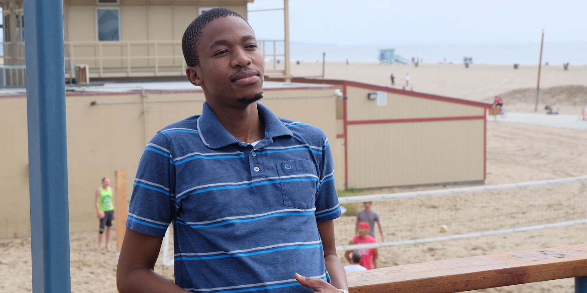

Live → Blog
March 20, 2020

Those who know me can attest to my association of sickness with the threat of death. It is therefore not surprising that the growing number of COVID-19 cases in my county is forcing me to ask the question: "What if the end of the road is in sight for me?" Despite my obsessive conclusion that I am dying each time I feel just a bit sick, I would like to believe that I do not fear my own death. The only deaths I fear are those of the ones I love, because when they are gone I have to learn to live with their absence. But when I am gone, at least I think, I do not need to make any adjustment as I will be no more. The only part of my death that breaks my heart is its impact on those I love. The challenge, therefore, is to prepare them for that possibility. This is why each time I am sick I remind them of my mortality, even though they do not like that conversation. But more than that, I have to ensure that my dependents will be fine beyond my passing. As I sit here in my house under a "shelter-in" order from the Santa Clara County and the State of California, I want to reflect on my life up to this point and what I would think if that was all there was to it. I will give it away, all things considered I think I have led a great life. Yes, I am probably biased, but I think I am content with how my life has turned out thus far.
I am content because I have had the privilege of love. I know I am notorious for whining about not having enough romantic love in my life, but in all honesty even that is not true. It is just my ungrateful, attention seeking, and dramatic self at his finest. I have met amazing women since my first dating experience in 2004 who have taught me a lot about myself, about people, and most importantly about life. A majority of them have supported my journey through life, from offering words of encouragement when I faced imminent failure to buying me ties for my interviews. Even greater than romantic love, is the abundant love from my friends, my family, and other well-wishers. Everything I am, everything I have accomplished, is completely because of all of that love. Of course I can never possibly express gratitude for it all, but my gratitude wall lists some of the people who have poured love into my life. It is not by any means an exhaustive list. There is nothing better than being loved - and I have had braai in Botswana. Well except, perhaps, loving! I am a son, a brother, an uncle, a nephew, a friend, and a potential husband. All roles that allow me to pour love into others. There is no greater feeling than to support the journey of another, to witness it from the front seat, and watch their growth over time. I am grateful to everyone who has loved me, who loves me, who I have loved, and who I love. Because of you, if my life ended today, I would go with a rich soul.
Despite being born and raised in a family of humble means, Modimo Mothatayotlhe Mmopi Wa Dilo Tsotlhe Rara Wa Masomosomo has poured countless and immeasurable blessings into my life. The best of those blessings, I now realize, was my confidence. I am reminded now of a time in 2001, I was in standard/grade 1 at the time, and there was a sponsored walk at my primary school only for students in the 5th to the 7th standards. Everyone else was to stay home. I heard that instruction loud and clear, and yet instead of sleeping in on that Friday morning, I insisted that my family prepare me for school. I did not have a cent to buy snacks or anything along the walk, but one of the teachers - Mrs Motswagae - gave me P2.50 and offered to give me a ride whenever I felt tired. I suspect that interaction is what instilled in me the belief that there is enough kindness and generosity in the world that nothing was out of reach for me. All I had to do was rise up early and show up. The second best of those blessings is failure. I recount now my scholarship application for some universities in South Africa in 2012. My teacher and mother, Mma Lekwape, had encouraged me to apply and even drove me to Gaborone to drop off the application forms. I remember being stuck in traffic and praying that we get there before the 5pm deadline. We were able to submit, but my application was unsuccessful. I have had many other failures - perhaps I should create a section to celebrate my failures if I live long enough - but all of them have taught me that failure is not the end of the world. If anything, it is a reminder to keep showing up because at some point there is bound to be success.
One must wonder if I have any regrets up to this point in my life. I could be wrong, but I think I have no regrets. At first I was going to say I feel like I have not been the best steward of my blessings. But that is mostly because I was recently rejected from a summer internship that I really wanted to do - a Quantitative Analyst internship with JP Morgan. So there is availability bias because I can think of all the ways I failed to perform in that process. But one of the gifts I have gained in this life is the ability to show kindness and compassion to myself. Yes, there is a lot I can do in strengthening my technical skills, especially given my non-traditional profile for the kind of roles I am hoping to break into. But I know that each of the experiences that I have chosen over the traditional paths have either brought me intense fulfillment or it was the best choice I could make at the time given the unique circumstances of my life. It is from that knowledge, that I am able to say if I go today, I have no regrets. Another possible candidates of a moment in my life that I can say I regret was getting involved with some women - at separates points in my life - but even then, I walked out of those experiences with lessons that have made me a better person than I was beforehand. There is always something we can do differently, but we should also be kind enough to ourselves to remember that we are doing the best we can as imperfect beings on our journey through life.
If this COVID-19 outbreak would be the end of me, I will go back to Modimo Mothatayotlhe Mmopi Wa Dilo Tsotlhe Rara Wa Masomosomo with a content soul. But I hope it will not be the end of me. There is still a lot of love I can receive, and a lot of love I can give. More than that, I have been blessed beyond measure - my cup overflows - and would love to multiply the value of those blessings. The world is not yet where I want for it to be, there is still work to be done. So I hope that I have at least 5 more decades before I have to return to Badimo ba ga Ramarea boo Kgakgathiba barwa Matlotla. In those 5 decades, I hope to help make the world more just, sustainable and empowering for historically marginalized populations. I suppose this quarantine might just be the opportunity to recharge and to practice those technical skills so that when we return I can try again. I have failed a lot to know that it is not about the 99 failures, but the 1 success. Wishing everyone health and peace as we navigate this health crisis.
← Return to Blog